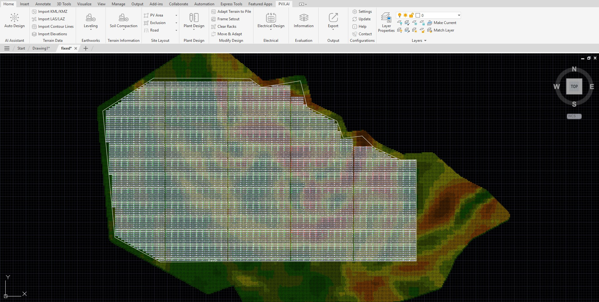

Case 04 · Storage Analysis
BESS peak shaving ve clipping davranışı
Depolama stratejisinin üretim profilinde yarattığı teknik etkileri ele alan karşılaştırmalı çalışma.
Problem Tanımı
Bu çalışmada sabit ve tracker senaryolarında depolama stratejisinin clipping azaltımı, pik kesme kapasitesi ve operasyonel çevrim üzerindeki etkileri değerlendirilmiştir.
Proje Bağlamı
Analiz kapsamında aynı yıllık üretim profili için farklı BESS kullanım stratejileri kıyaslanmış, şebeke teslim eğrisi üzerindeki etkiler izlenmiştir.
Kullanılan Yöntem
Varsayımlar doğrultusunda clipping odaklı şarj/deşarj kurgusu ile peak shaving odaklı kurgular karşılaştırılmış; kapasite ve güç oranı parametreleri sabitlenmiştir.
Teknik Analiz

Elde edilen bulgular, strateji seçiminin yalnızca enerji miktarını değil, teslim eğrisinin stabilitesini ve batarya çevrim derinliğini de etkilediğini göstermiştir.
Bulgular
- Peak shaving odaklı kullanımda şebeke pikleri daha kontrollü hale geldi.
- Clipping odaklı kullanımda enerji geri kazanımı arttı.
- Çevrim stratejisi seçiminde operasyon hedefi belirleyici oldu.
Sonuç
Teknik değerlendirme sonucunda BESS stratejisinin proje hedefiyle hizalanarak seçilmesi gerektiği ve tek tip yaklaşımın her sahada optimum sonuç vermediği görülmüştür.
Teknik Çıkarımlar
Bu çalışma, depolama tasarımında performans hedeflerinin baştan tanımlanmasının modelleme doğruluğunu ve yatırım karar kalitesini artırdığını göstermiştir.